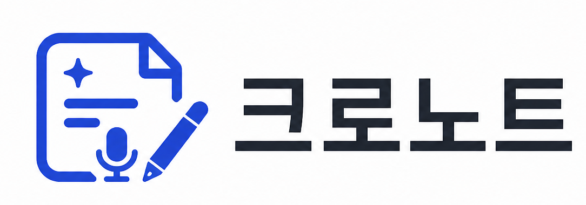

크로노트
데모
내 노트
6
＋ 새 노트
강의 슬라이드 위에 필기하고, 받아쓰기와 AI로 정리하세요. (데모: 모든 카드는 편집 화면으로 열립니다)
＋
새 노트 추가
PDF
운영체제 — 9주차
6월 18일 · 12페이지
선형대수 — 중간 정리
6월 15일 · 8페이지
PDF
머신러닝 개론 — 경사하강법
6월 12일 · 15페이지
자료구조 — 트리와 그래프
6월 10일 · 9페이지
PDF
데이터베이스 — 정규화
6월 7일 · 6페이지
알고리즘 — 동적계획법
6월 5일 · 11페이지